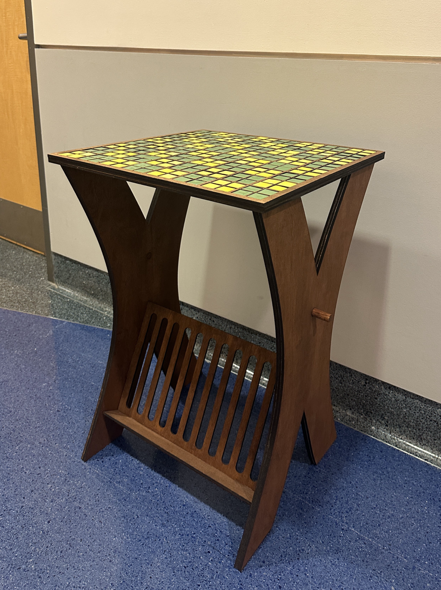
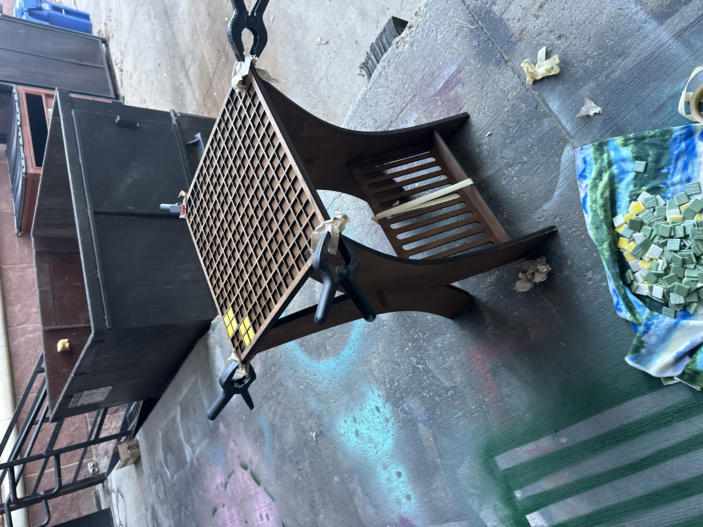
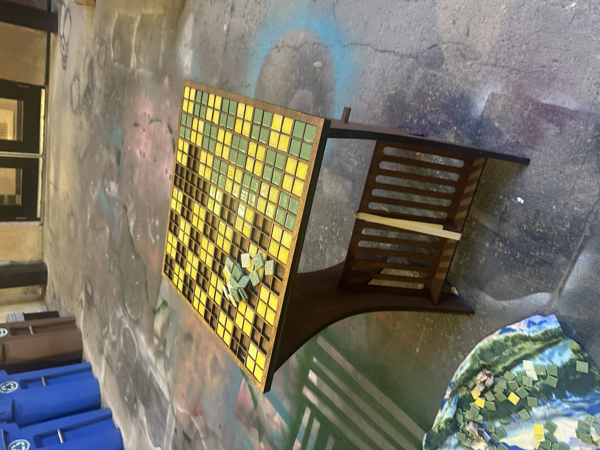
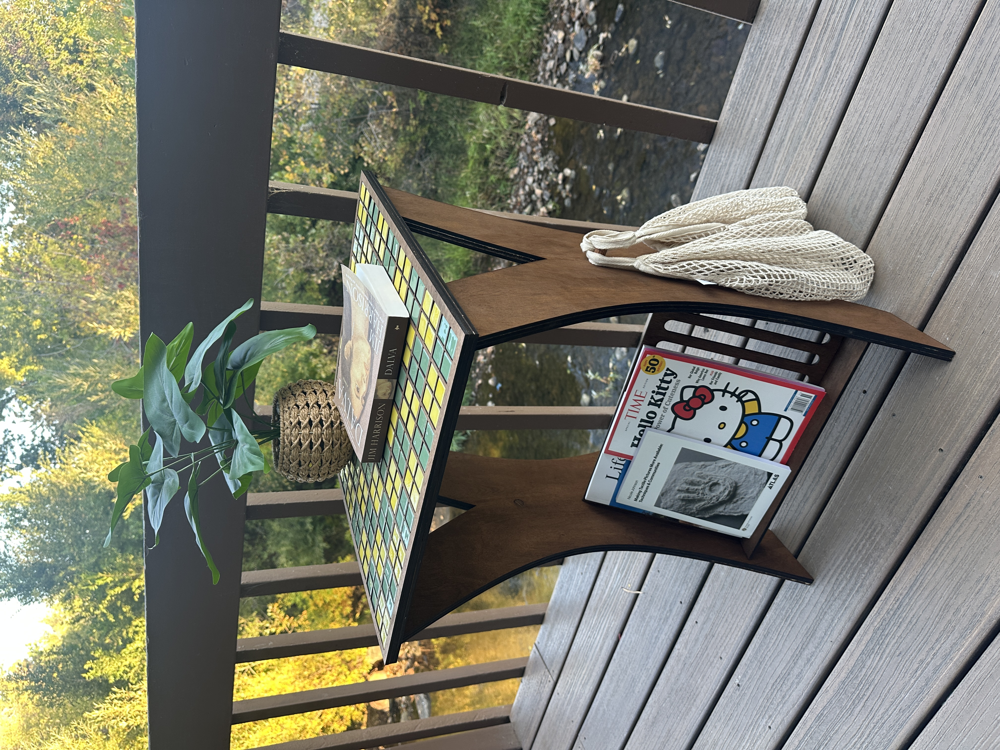

Overview
Inspiration
Moving from California to Colorado for school created a recurring problem: traditional furniture becomes a burden during relocations, often damaged in transit or abandoned for something new at the next destination. This impermanence created emotional distance from my possessions — I hesitated to invest in pieces I'd eventually leave behind.
I wanted to design furniture that could move with me without compromise, challenging the false choice between beautiful and practical furniture.

Process & Solution
I designed this multipurpose side table using laser-cut slot-together geometry that enables tool-free assembly and disassembly. Starting in CAD, I developed the interlocking joint system so the entire piece could flat-pack for transport while maintaining structural stability during use.
I designed the surface pattern as a ceramic-inspired chessboard that functions both decoratively and as a playable game board. To maximize utility, I integrated magazine and book storage into the structure and added side hooks for bags.
After prototyping and validating the joint tolerances, I fabricated all components and assembled the final piece — creating furniture that combines aesthetic appeal with genuine functionality, and most importantly, can travel with me wherever life takes me next.




Reflection
This project taught me that the best design solutions emerge from personal pain points. By designing for my own need as a transient student, I created something that addresses a broader problem many young people face.
The flat-pack approach demonstrates how constraints — in this case, frequent moves — can drive innovation rather than limit it. Most importantly, this project reinforced that furniture doesn't have to choose between form and function; thoughtful design can deliver both beauty and utility without compromise.